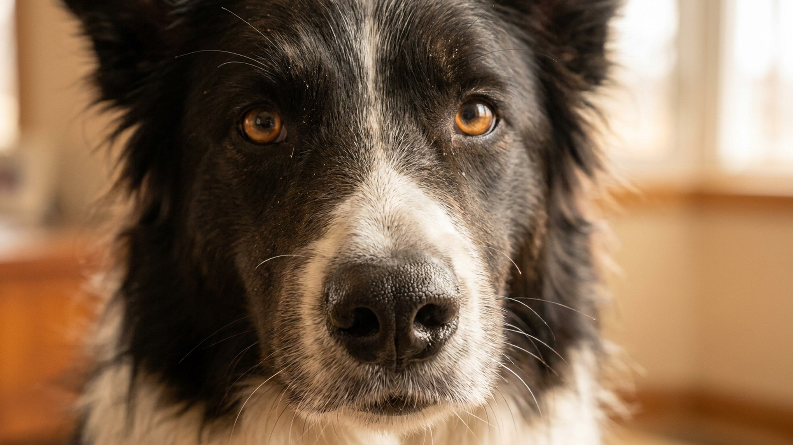

Хозяева бордер-колли часто делают одну и ту же вещь: гуляют по два часа в день, а возвращаются домой — и всё равно находят погрызенный плинтус или разобранную корзину с игрушками. Дело не в упрямстве породы. Бордер-колли выведена управлять стадом, а это задача прежде всего для головы, а не для лап. Ниже — как понять, что собаке не хватает именно умственной нагрузки, и что с этим конкретно делать.
🐾 Питомец ведёт себя странно?
AnimaLife расшифрует поведение кошки и собаки и подскажет, что делать. Попробуйте бесплатно прямо в мессенджере.
Бордер-колли — пастушья порода, отбиравшаяся не за скорость, а за способность принимать решения на ходу: читать стадо, предугадывать движение, реагировать на сигнал пастуха с расстояния в сотни метров. Это работа, которая занимает голову непрерывно. Когда та же собака живёт в квартире и её единственная задача — пробежать парк, мозг остаётся незагруженным. Физическая усталость приходит, но голова не отдыхает — она ищет себе применение сама, и это применение вам вряд ли понравится.
Эти сигналы не говорят о «плохой» собаке — они говорят о породе, которой не хватает работы. На что стоит обратить внимание:
15 минут активного умственного занятия дают примерно столько же усталости, сколько час бега по парку. Это не метафора — это наблюдение, которое легко проверить дома: попробуйте 10 минут шейпинга (обучение новому поведению методом маленьких шагов) вместо вечерней прогулки и посмотрите, насколько быстрее собака укладывается спать.
Конкретные инструменты ментальной нагрузки, которые работают с бордер-колли:
Одна из ловушек с бордер-колли — собака начинает заводить сама себя. Дали нагрузку — она хочет ещё. Дали ещё — хочет больше. Круг замыкается. Поэтому спокойствие нужно учить так же намеренно, как команду «сидеть».
Практически это выглядит так: после активного занятия ввести ритуал «конец работы» — убрать игрушку, сесть рядом, поглаживать тихо. Не давать команды, не инициировать игру. Первые недели собака будет настаивать — это нормально. Со временем она научится понимать, что сигнал «конец» означает отдых, и расслабляться по нему. Без этого навыка любое количество нагрузки будет раскручивать спираль возбуждения, а не гасить её.
Квартира сама по себе не приговор для бордер-колли. Эта порода живёт в городах и при правильном подходе чувствует себя хорошо. Но «правильный подход» — это ежедневная структура: физическая нагрузка плюс умственная работа плюс обучение спокойствию. Если ближайший год в жизни хозяина предполагает много командировок, ненормированный день или отсутствие времени на ежедневные занятия — стоит рассмотреть другие породы. Бордер-колли не прощает долгих простоев: она найдёт себе занятие сама, и это занятие будет деструктивным.
🐾 Здоровье питомца под контролем
AI-ветеринар, дневник здоровья и персональные советы для вашего питомца — установите AnimaLife бесплатно.
🐾 Понравился разбор?
Подпишитесь на канал — каждый день разбираем по одному тревожному симптому у кошек и собак: что в пределах нормы, а когда пора к врачу. Подпишитесь, чтобы не пропустить разбор, который может спасти здоровье вашего питомца.